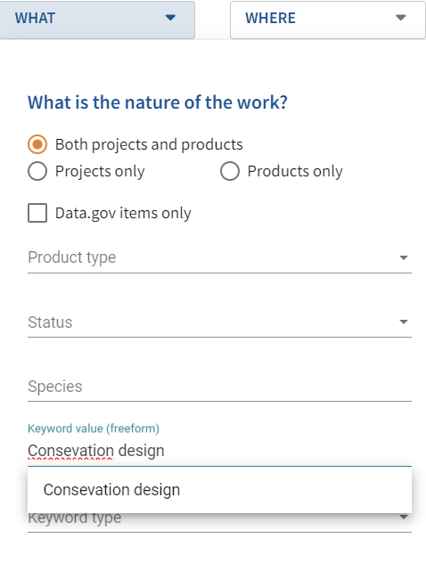

QA/QC Fixes
Must Do QA/QC Fixes
Main
- Products need to have a specific resource type selected (not “product”) AND they need to be valid resource types. See QA/QC list from DJ Case.
Main/Citation
- Responsible Parties need to have a valid role selected. See QA/QC list from DJ Case.
Metadata Repositories
Ensure you have a single version of your data.gov tag and it is consistent across all of your items. See ScienceBase scanner.
If you update your Metadata Repositories in mdJSON and publish to ScienceBase, you will also need to delete the erroneous version from ScienceBase (called Harvest Sets in SB). The issue is that SB doesn’t remove tags when an item is republished, it just adds to tags. This issue applies to all keywords, but it is most important to fix for Harvest Sets. This scenario can happen with both erroneous data.gov tags or misspelled Harvest Set tagging.
You may want to consider using the injector script to delete or replace erroneous versions from mdJSON. You would still be required required to manually remove the erroneous versions from SB items.
Funding
LCC allocations need to list the funding agency as the source (e.g., U.S. Fish and Wildlife Service), not the LCC. See QA/QC list from DJ Case.
Additionally, all funding from other FWS programs need to list FWS as the source (and not list the source as Fisheries, specific Refuges, ES, etc.). Clarifications on the exact program or refuge where the funding came from can be done through the Funding/Other Contacts field (and choose the role of “administrator”).
All allocations should list the fiscal year when the funds were allocated (this is different than a project’s overall start and end dates - those are entered in Main/Time Period). There should be only a single fiscal year identified per allocation. Use the “Pick a Fiscal Year” dropdown to autofill the date fields.
All allocation recipients should be an Organization, not an Individual contact. Clarifications, although not required, can be done through the Funding/Other Contacts field (e.g., list a “principalInvestigator”).
Contacts
All contacts need the appropriate contactType identified—this is particularly important for funding summaries. See QA/QC list from DJ Case.
Address the Contact QA/QC list from DJ Case.
Note: this is a static list that was generated during the initial creation of the Science Catalog. The spreadsheet will not update when you fix an issue listed. Please update the “Fixed” column to “yes” when you have addressed a particular item.
Keywords
- Fix “Consevation design” Typo. Select correct option in mdEditor and re-publish. Affected records can be found at the Science Catalog by searching for the misspelled keyword in the What tab under the Keyword value (freeform).

Distribution
Distribution links need to be included for products. This was already required for all products and this is particularly critical for items sent to data.gov. This is the only online resource data.gov reads so without a URL here, there is no way for a user to access the actual product. The recommended role is “distributor” (see the Product Distribution section for more info).
Note: Matt Heller is looking into a solution using the injector script so data managers could run this automated process themselves to meet minimum requirements.
Fixing Errors
Republish any records that don’t have mdJSON attached (without mdJSON, the item will not show up in the Science Catalog). See ScienceBase scanner.
Go through errors/warnings in the ScienceBase scanner (e.g., no ISO Keyword, bad repo tag, etc.).
Address remaining QA/QC issues from DJ Case.
Fix the errors identified by the ASG in manual QA/QC checks of the Science Catalog. See list.
Template scripting introduced some errors for some LCCs. Fixing these may be most effective with the injector script. Specific details related to these issues will be discussed with those who used the template scripting.